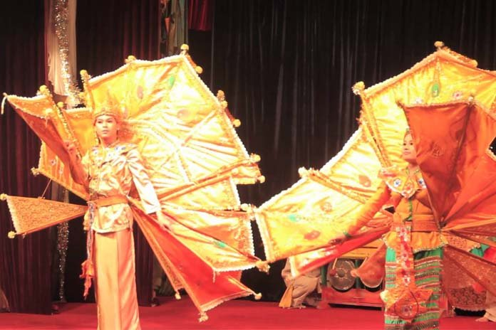
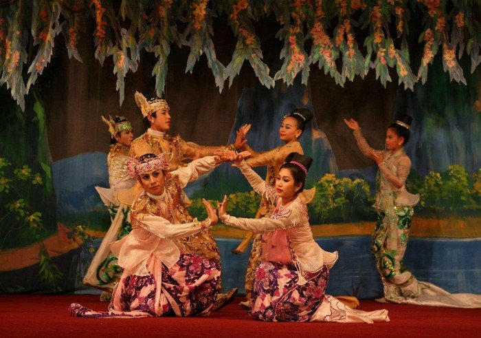
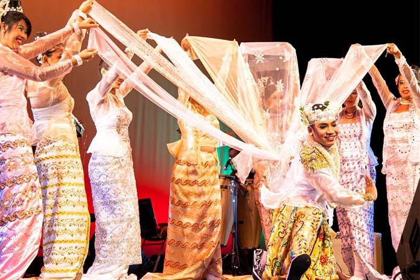

Anyeint
Written by U Than Pe ( Tour Guide )
Myanmar lies between two great, ancient cultures . China lies on the east of her borders . Chinese society was very secretive . Well to do people lived behind the high brick fence , and beyond the reach of poor down trodden people's wails and cries . Indian subcontinent lies on her north and west . Indian society was riven by anachronistic caste system . Myanmar got religion and script from India , and outer jacket from China . But refused to take patronymic system of names , nor she ever condoned the female infanticide like her neighbours' ancient practices . Unlike her neighbours she has a contented philosophic and ever-jolly population . Her people need very little to keep them happy . They do not need elaborate preparations and support.
Anyeint
Anyeint is a unique phenomenon not found in any other country . Its definition is non dramatic performance where a female artiste dances and sings to the accompaniment of light music and is usually supported by comedians called lubyets or Lushwindaws . There are female dancers in south Asian countries called Kohtaywalis meaning a lady from big , walled building_a code word for brothel . They are dancers of ill repute,they dance and sing to the accompaniment of music . The similarity ends there . The audience of Kohtaywalis are there to listen to filthy songs and watch fertility dance . Same is true of middle-east harem dancers . The Far East also has similar dancers.
On the other hand our anyeint thama , as our female artiste , is called, is a dignified lady . She performs in the open air and on a stage with an audience of never less than a hundred . She is also accompanied by accomplished music band with at least seven instruments and their players . There are three to four comedians to support her and share the stage with her . She may also have a younger lady learning from her the intricacies of the trade . Dancer's mother or sister may also be sitting just off the stage carefully watching the oglers . How can our anyeint thama be corrupted while she is under hundreds of watchful eyes?
Anyeint pwe, the performance is always free . Our fun loving people are always ready to shell out a few silvers for the sake of an anyeint pwe of one evening . Shinbyu the novitiation ceremony and nar tha , the earboring are not complete without anyeint . Winning a shield or trophy by a village team also needs to be celebrated with anyeint . Until early 60s we enjoyed open air performance at public parks thanks to the municipal authorities , of those days.
Once a decision is made they go to the manager of the anyeint ensemble . They negotiate the payment for the whole group . It always includes, the lead dancer and supporting comedians, musicians and other trainees if any . They agree on date , place and transportation . Site, stage, lighting, catering and accomodation are responsibility of the host.
Stage may be an improvised roofless serai available in the vicinity . If not they get hold of some empty drums stand them in a square formation borrow planks from the nearest source and the, stage is ready . A decent house is rented f.o.c for accomodation . Catering is not a problem . Myanmars have more than necessary local chefs, in every locality . They have been catering at every function in the area, haven't they?
On the appointed day the troupe arrives, usually about midday . The orchestra people set up their instruments . They start tuning rehearse a little . In fact they do not need rehearsal . They know their part . They had been playing the same pieces together the whole season . Tuning and rehearsal is actually meant as a call to the orchestra, watching their activities avidly.
At the sound of music villagers arrive with their mats if they are not provided by the organizers of anyeint pwe . Those who do not like loud music take the place away from the orchestra , on the other side of the stage . By 7:30 or 8:00 pm music starts in earnest . At the formal start leading lady, her assistant or trainee and the comedians come on stage . One of the comedians introduces the artistes and announces the purpose of having the anyeint pwe . All these are done in very , elaborate , flowery and flattering terms . The organizers blush furiously but inwardly enjoy the exaggerated flattery . At long last the comedian calls upon the leading artiste in a language loaded with praise and flattery and usually versified.
The lead artiste carries the name of the troupe . She faces and thanks the audience , organizer host and her cast . She pays obeisance to Lord Buddha , His teachings and clergy, the sangha . She also pays respect to local guardian spirits and the audience once again.
She sings one piece and conclude it with a dance . At the end of the dance she sits down and comedians take over the stage . One may fan her . Others play a five minute joke or drama . They praise the dance and the song . This system is very purposeful ; it rests the dancer while audience savour the jokes . This goes on, song, dance, jokes, song until midnight or 1 am.
Some lead ladies have also gone on to successful stardom in movies . Now there are many artistes in the cinema who had started as anyeint thama . Some comedians also follow a similar path onto the silver screen.
This anyeint thabin started after the decline and fall of Konbaung dynasty . Some believe that the artiste became more dignified with the establishment of anyeint thabin on a firm footing . Maybe they are right . Now it is still struggling to stay alive . CDs and DVDs and tube are pushing it hard, of the stage.